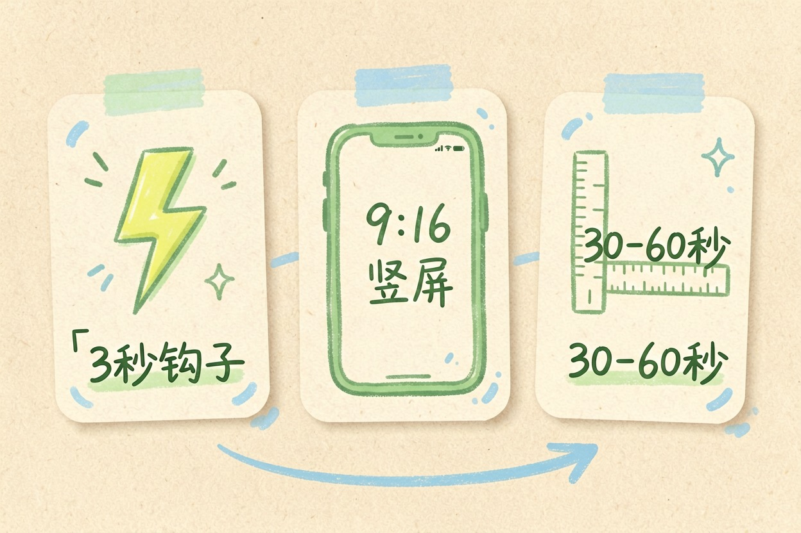
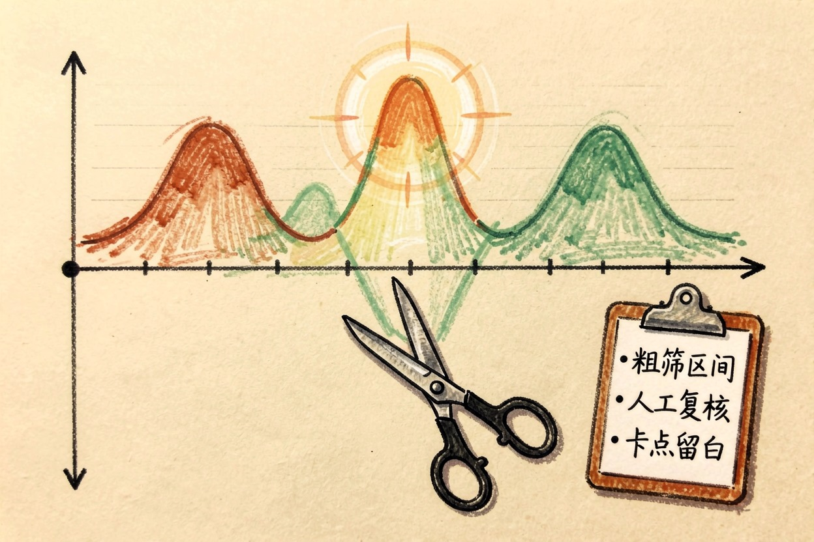
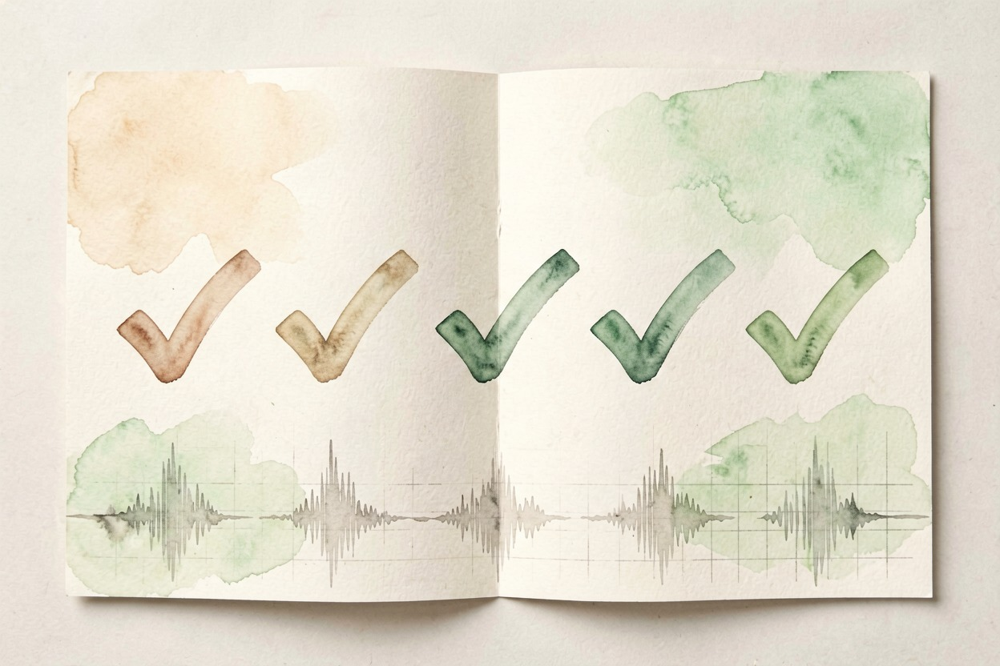

用 AI 把长视频切成短视频？选段与成片 — Learntide
长视频不想整段发？挑出最抓人的几十秒，加字幕和封面，一条短视频就成型。
ai长视频切片先定选段标准

ai长视频切片，第一步不是动手剪，而是想清楚要哪类片段。教程讲知识点，拆成一条一个技巧。vlog 讲情绪，挑笑点和反转。标准先定，后面不返工。
完播率是最实在的尺子。前三秒没钩子，观众就划走。选段把最亮的那句话放开头，完播率才上得去。一条片只讲一件事，贪多必垮。
长度也有讲究。短视频平台偏短，三十秒到一分钟最稳。太长容易中途划走，太短讲不透。先按平台习惯定长，再选段。标准写下来，每次照着挑。
竖屏是默认。多数平台九比十六，横片要裁。裁时保人脸，别把主角切出去。构图先定，再选段。
用工具自动找高光时刻

很多剪辑软件带「智能选段」，能按语音能量和画面变化标出高光。先让它跑一遍，拿到候选区间。它是粗筛，不是定稿，别全信。
把候选区间导出来逐个看。能量高不一定是好内容，可能是背景噪音。人工过一遍，留下真有信息量的。同类片子多积累，你越来越会挑。
智能选段常用参数：
1 片段时长设 20 到 45 秒
2 高光灵敏度调中档
3 输出候选区间清单
4 逐条人工复核也可以看评论区。观众反复问的点，就是高光候选。用户用脚投票，比算法更准。评论区还是选题库，攒着下次用。
节奏快慢也要看。快剪适合炫技，慢叙适合知识。同一素材两种剪法都试，平台偏好会变。
手动精修选段边界
自动区间往往掐在句子中间。手动把开头移到一句话之前，结尾落在停顿处。切口干净，观感才顺。
卡点要准。音乐鼓点或画面转场处下刀，节奏更舒服。同一段多存几个版本，发布时测哪个数据好。留白也是节奏，别把每帧都塞满。切口试看三遍，确认不跳。
字幕位置别压脸。放下方安全区，手机全屏也不挡。
加字幕与封面提升完播
切片要加字幕。手机端多数静音刷，没字幕就流失。字幕用大字号、高对比，别和画面混。
封面决定点击。挑选段里最准的一帧，叠一句钩子文案。封面和开头呼应，点击率更稳。标题写痛点，别写概括。字幕颜色随画面变，浅色画面用深字。
批量导出与发布避坑
同一条长视频能切出多条。按主题分组，错峰发布，别一天全发。发布前统一画幅和码率，平台不二次压缩。
ai长视频切片最怕三件事：切口生硬、字幕挡脸、画幅不符。每条都先小流量试发，数据说话。系列片做个模板，封面格式、字幕样式固定，效率翻倍。想给片子换语言，可以看同簇的 ai翻译视频 思路。
数据回看别省。哪条完播高，复制它的结构。切片是手艺，也是数据活，越做越准。
最后一句提醒：别把自动选段直接当成品发，先人工过一遍。把标准定死，ai长视频切片才能稳定出片。

本文信息核对于 2026-08-08。AI 产品的价格、免费额度与功能变动频繁，实际以各工具官网当前说明为准。